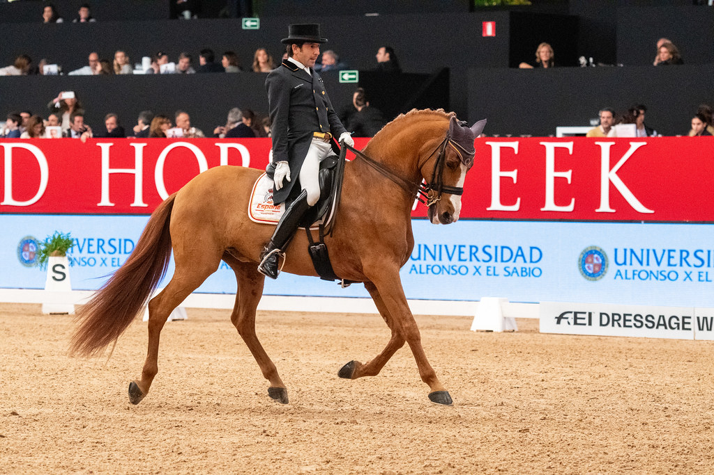

Claudio Castilla conquista el Gran Premio del Campeonato de España de Doma Clásica con Jota Das Figueiras
El jinete gaditano Claudio Castilla Ruiz se ha adjudicado el Gran Premio del Campeonato de España Absoluto de Doma Clásica 2026 con el lusitano de 12 años "Jota Das Figueiras", al firmar una nota media del 72,500% en las instalaciones de Ríos EQ-Club Aros de Murcia, sede del campeonato del 3 al 7 de junio.

Uso editorial autorizado FEI
El jinete gaditano Claudio Castilla Ruiz se ha adjudicado el Gran Premio del Campeonato de España Absoluto de Doma Clásica 2026 con el lusitano de 12 años "Jota Das Figueiras", al firmar una nota media del 72,500% en las instalaciones de Ríos EQ-Club Aros de Murcia, sede del campeonato del 3 al 7 de junio.
Castilla volvió a brillar en el escenario murciano donde ya había firmado tres victorias en el CDI3* de abril, esta vez con uno de los caballos más estables de su cuadra esta temporada. El binomio se impuso en una prueba que reunió a los principales protagonistas de la doma clásica nacional, en una edición que es la primera vez que Murcia acoge el campeonato absoluto.
El programa de la semana incluye, además del Absoluto, las pruebas del Campeonato U25, la Copa Clásica, el Criterium Nacional, los Masters de Selección para caballos jóvenes y el Campeonato Paraecuestre. Las clasificaciones por equipos y los kürs de música decidirán el resto de medallas en las jornadas finales del fin de semana.
— Redacción de Hípica al Día